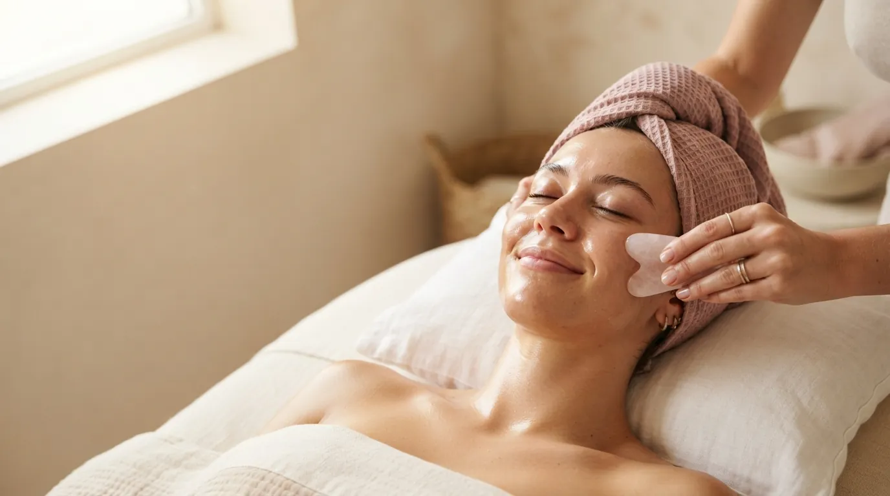

Facial massage · Prague 4
Gua Sha Facial Massage in Prague
A draining, contouring ritual with a smooth stone. It releases tension in the face, helps clear puffiness and improves skin tone using traditional Gua Sha techniques.
What Gua Sha facial massage is
Gua Sha is a traditional technique in which a flat, smoothly polished stone is drawn in flowing strokes over oiled skin. The shape of the stone follows the lines of the face — the jaw, cheekbones, forehead and the area around the eyes.
I lead the strokes in the direction of lymph flow, from the centre of the face outwards and down towards the neck. The massage both drains and contours: it releases tight muscles, moves retained fluid and leaves the skin fresh and even.
How the treatment works
- Cleansing and oil I remove make-up and apply oil so the stone glides smoothly.
- Opening the neck I start with the neck and shoulders so lymph from the face has somewhere to drain.
- Strokes with the stone Flowing draining strokes over the jaw, cheeks, forehead and around the eyes, always with the lymph flow.
- Settling Light closing strokes and manual work calm the skin.
What Gua Sha does
- less puffiness and fewer under-eye bags
- releases tension in the jaw and forehead
- better-defined facial contours
- improved tone and a more even complexion
- well-circulated, brighter skin
- deep relaxation during the massage
Who it suits
Gua Sha suits you if you wake up with a puffy face, clench your jaw or your skin looks tired and dull. It is a gentle, pleasant treatment that works both as a moment of relaxation and as regular skin care.
When we do not massage
- active acne, cold sores or skin inflammation
- recent fillers or botox (wait 2–3 weeks)
- recent chemical peel or laser treatment
- broken capillaries (couperose) in an acute phase
- fever and acute illness
Not sure? Call me before booking on +420 721 761 411 and we will talk it through.
Price of Gua Sha facial massage
Frequently asked questions
Will Gua Sha leave marks on my face?
On the face I work gently, so all that remains is a light flush that fades quickly. The strong marks you may know from Gua Sha on the back do not appear on the face.
How long does the effect last?
Reduced puffiness and a fresher look are visible straight away and usually last a few days. With regular sessions, contours and skin tone improve over the long term.
Can I do Gua Sha at home?
Yes, and I am happy to show you the right direction of the strokes. A studio session is longer and more thorough, and it starts by opening the neck — without that, home Gua Sha only works halfway.
How is it different from facial lymphatic massage?
Both support lymph flow. Lymphatic massage is done by hand only and very gently; Gua Sha adds the stone, which gives a stronger contouring effect.
Book your Gua Sha massage
The studio is in Prague 4 — Nusle, a short walk from Pankrác and Vyšehrad. Booking online takes a minute.